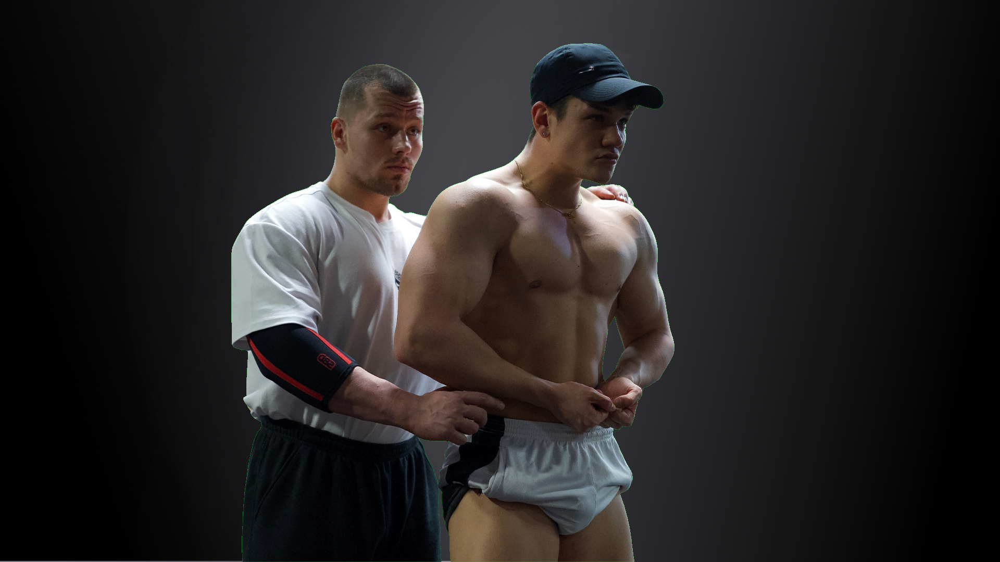
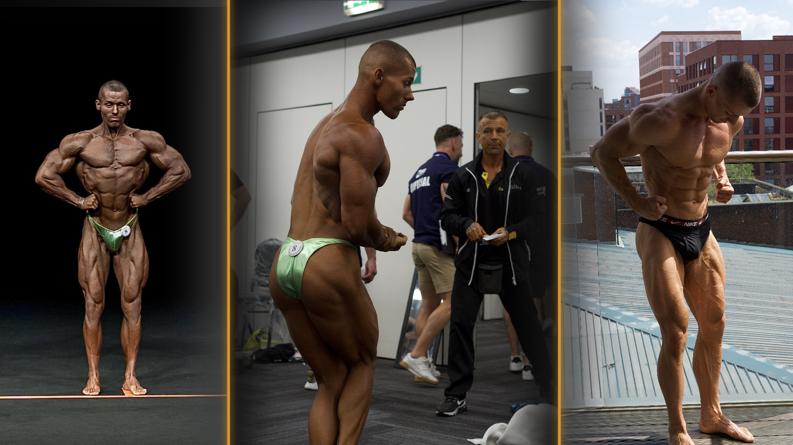

ESETLEG VERSENYZŐ VAGY?
TANULJ PÓZOLNI VELEM
PÓZOLJ PROFIKÉNT
Gyere el és tanuld meg a kategóriádhoz tartozó kötelező pózok helyes végrehajtását, ahogyan azt a versenyszövetséged előírja. Számtalan órát tölthetsz az edzőteremben, követhetsz gondosan összeállított étrendet, edzehetsz keményebben mint versenytársaid, alhatsz eleget, és felhozhatod a lemaradt izomcsoportjaidat, de ez mind hiába ha nem tudod, hogyan prezentáld mindezt a színpadon.

A PÓZOLÁS EGY KÜLÖN SPORT...
A pózolás a megtévesztés művészete, amely lehetőséget ad arra, hogy kialakítsd a testalkatodnak megfelelő
pózolási rutint. Kiemelheted a legerősebb vonásaidat, miközben elrejted a gyengébb részeket. El kell sajátítanod a koordinációt, propriocepciót, az izomszabályozást, a légzési mintákat, a vákumot, illetve gyakorolnod kell folyamatosan a kategóriád kötelező pózainak elsajátítását és a pózok közötti átállásokat, hogy az izommemóriádba rögzüljön, és a pózok tükör nélkül is tűpontosak legyenek.

SZABADPÓZ, MINT ÖNKIFEJEZÉS
Ne úgy tekints a szabadpózra mint a kellő rosszra, hanem fogd fel lehetőségként. A színpadon megmutathatod mindazt a kemény munkádat, amit a felkészülésedbe fektettél. A jó fizikum mellett magabiztosságra is szükséged van, és tudnod kell, hogyan kell helyesen pózolni ahhoz, hogy valóban kitűnj az átlagból. Ez a lehetőséged arra, hogy megmutasd, mennyit voltál hajlandó áldozni a célodért.
Ha bármelyik igaz rád, az 1:1 Coaching Neked lett kitalálva.
Teljes mértékben a saját, világszínvonalú módszereim szerint dolgozom, hogy végig motivált maradj, valóban megértsd, mit miért csinálunk, és folyamatosan közelebb kerülj a kiemelkedő eredményekhez. Ha velem dolgozol, egy valódi átalakulás vár rád – és én minden lépésnél ott leszek melletted.